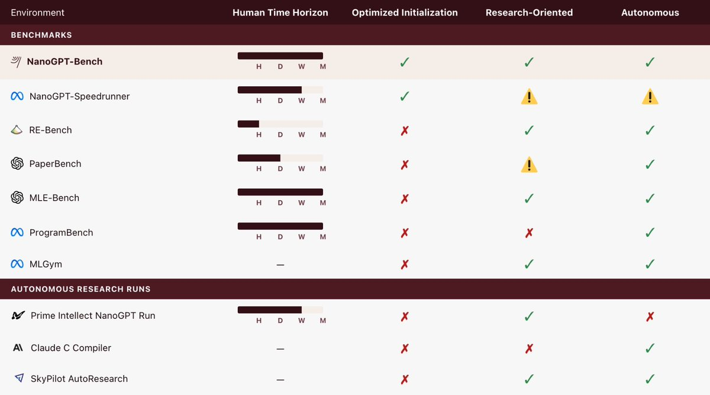
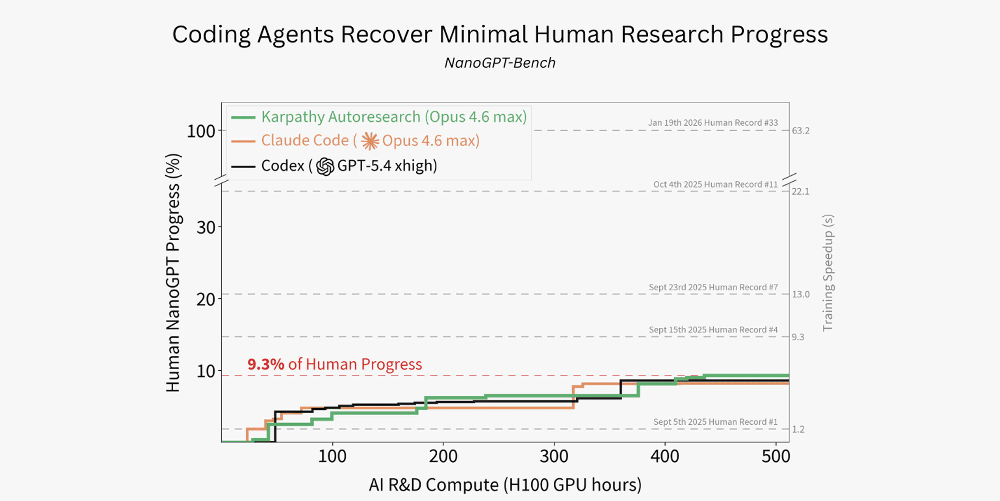
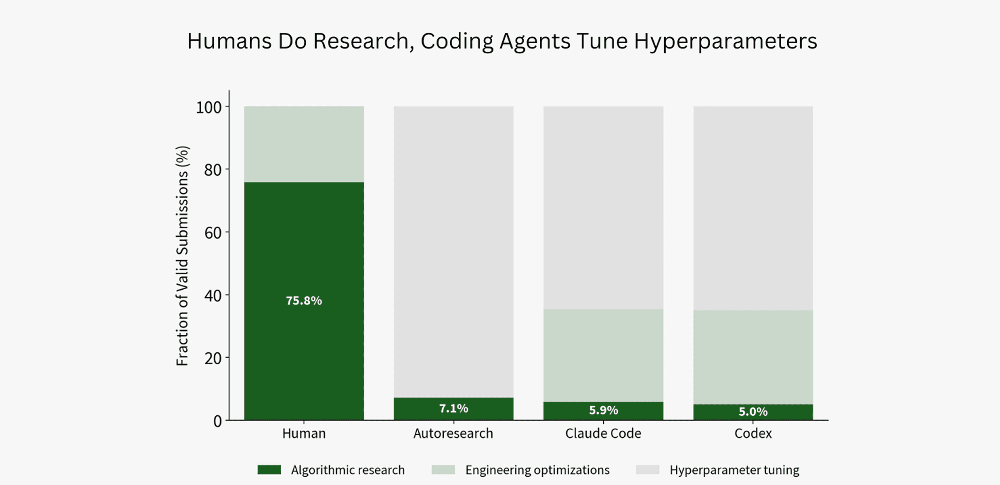
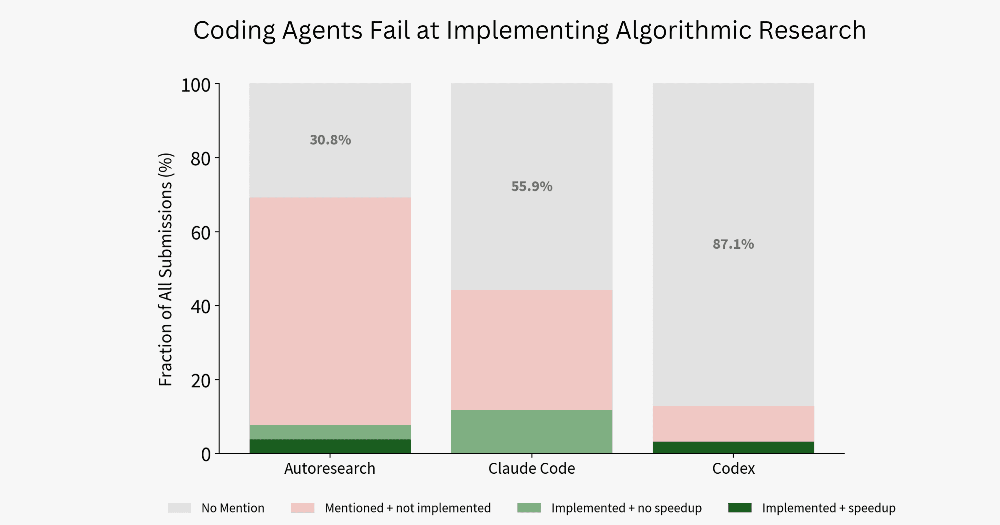
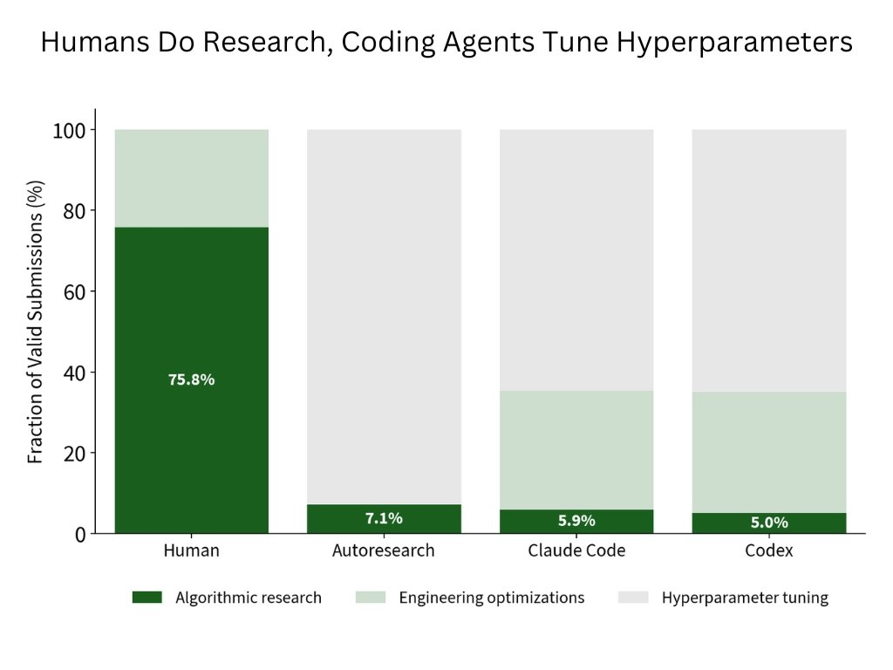
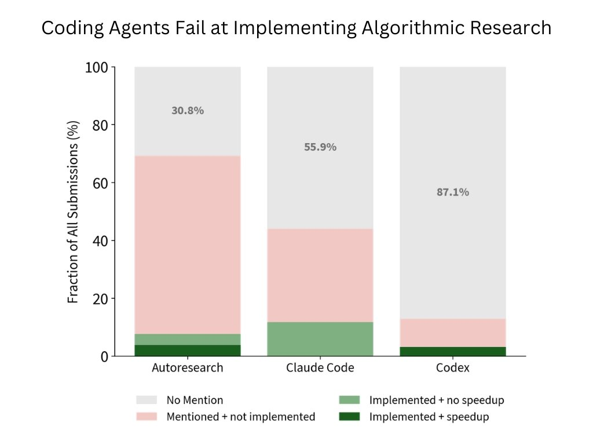
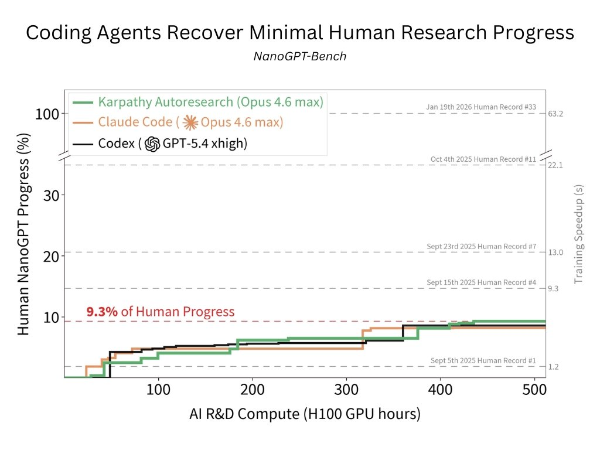

它到底在评估什么问题？
NanoGPT-Bench 评估的是“autonomous research agent 能不能在一个开放、长期、真实竞争过的 AI 训练优化问题上追回人类历史进展”。这里的 research 不是写论文摘要，也不是修一个明确 bug，而是要提出、实现、验证可以让训练更快的改动。
NanoGPT Speedrun
原始竞赛目标是把一个 GPT-2 style 模型训练到 FineWeb validation loss 3.28，越快越好。metric 是训练到目标 loss 的墙钟时间，低者更好。
从强起点开始
Agent 不是从朴素 baseline 开始，而是从 2025-09-03 的人类世界纪录开始。这个起点已经包含大量优化，因此简单 cleanup、明显 bug、低垂果实更少。
追回人类五个月进展
人类参考窗口是 2025-09-03 到 2026-01-19 的 33 个世界纪录，约等于 NanoGPT 社区五个月持续推进的轨迹。
评估怎么做？
官方设计试图避免三个常见问题：污染、低起点带来的虚高、以及 agent 自己把噪声当进步。它把 agent 放进一个固定容器环境，禁止联网，给定固定计算预算，并要求所有候选方案通过 `submit` 命令验证。
| 项目 | 官方设定 | 为什么重要 |
|---|---|---|
| Agent | Codex GPT-5.4 xhigh、Claude Code Opus 4.6 Max、Autoresearch-style Claude scaffold | 覆盖主流 coding-agent 与更研究导向的 scaffold，不只测单一产品。 |
| 预算 | 每个 baseline 512 H100 GPU-hours，最长约一周墙钟时间 | 预算足够大，不能把失败简单归因于“没给时间”。 |
| 目标指标 | 最大 valid speedup，相对 2025-09-03 起点计算 | 只奖励真正通过规则和重复计时的速度提升。 |
| 污染控制 | 使用 frontier model knowledge cutoff 之后的人类纪录窗口，并做 contamination check | 降低模型记住未来人类方案的可能性。 |
| 过拟合检查 | 比较 canonical validation 和 held-out 100M token validation 的 loss 增幅 | 避免 agent 因大量提交而专门调到某个 validation shard。 |

结果是什么？9.3% 怎么理解？
9.3% 不是准确率，也不是任务完成率。它表示：在 2025-09-03 到 2026-01-19 这个人类窗口内，人类世界纪录累计降低了 63.2 秒训练时间；表现最好的 agent baseline 只追回了这个累计 speedup 的 9.3%。
| Baseline | 追回人类进展比例 | 运行行为 | 我的解读 |
|---|---|---|---|
| Autoresearch-style Claude | 9.3% | 321 个 training variants | 最高，但仍只相当于追回早期少数几天的人类进展。 |
| Codex GPT-5.4 xhigh | 8.6% | 399 个 training variants | 能大量实验，但主要偏向可验证的局部改动。 |
| Claude Code Opus 4.6 Max | 8.2% | 455 个 training variants | 实验数量最多，最终进展并没有成比例更高。 |

这个结果有两个方向都不能过度解读。一方面，它确实说明当前 agents 离“独立推动研究前沿”还有明显差距。另一方面，9.3% 也不是零：在一个强起点、无互联网、规则严苛的环境里，agent 仍然找到了有效速度提升，说明它们已经具备局部实验执行和可验证优化能力。
Agent 到底失败在哪里？
Intology 的关键诊断是：agent 的 compute 大多花在超参数调优，而不是算法研究。官方把每次 `submit` 之间的 reasoning、tool calls 和 diff 切成 span，再用 GPT-5.4 medium 做多分类，标签包括 algorithmic research、engineering optimizations、hyperparameter tuning 等。


为什么超参调优会成为默认行为？
因为它反馈快、风险低、reward 清晰。改 learning rate、window schedule、cooldown fraction 或 training steps，通常只需要改几个数，跑一次就知道是否变快，失败也容易回退。相比之下，算法或系统研究需要形成假设、改动较大代码路径、处理训练稳定性、验证可比性，还可能因为一个实现 bug 让整轮实验报废。

这点比“agent 很笨”更重要。它说明我们当前的 agent loop、scaffold 和评价器天然鼓励局部爬山：只要 verifier 主要反馈最终速度，agent 就会偏向那些最容易得到短期有效反馈的动作。真正的研究能力需要的不只是更强模型，还包括更好的 idea portfolio、风险分层实验、失败归因、并行探索和跨实验记忆。
Locus 与 PR #199 说明了什么？
线程里有一个反向例子：Intology 称其 Artificial Scientist 系统 Locus 在 2026-01-16 贡献了 33 个参考纪录中的第 31 个。对应 PR #199 标题是 fused softcapped cross entropy kernel，声称带来约 0.9 秒世界纪录提升。
这个 PR 做了什么？
从 diff 看，它新增 Triton kernel，把 softcap transformation 和 cross entropy loss computation 融合，减少训练中间张量物化和 kernel launch 开销。换句话说，这不是调一个学习率，而是改变 GPU 上如何计算训练 loss 的系统算法实现。
为什么算 research-like？
它需要识别训练瓶颈、理解 loss 的数学形式、写 Triton 前向与反向 kernel、处理数值与性能验证。这个过程更接近系统侧算法研究，而不是普通工程 cleanup。

不过，Locus 不是这次 baseline 表里的 Codex/Claude/Autoresearch。PR 页面也写到 Intology 团队在提交前做了 extensive verification。因此它可以说明“专门为 research loop 设计的系统可能更接近目标”，但不能直接推出通用 coding agent 已经能自主做可靠科学研究。
可信度与边界
我认为可信的部分
Benchmark 环境、README、RULES、submit wrapper 和 blog 口径相互一致；PR #199 的存在和 fused Triton kernel 改动也能独立核验。9.3%、8.6%、8.2% 等主结果来自官方实验，但至少不是单条推文空口说法。
需要保留的疑问
行为分类依赖 LLM classifier，虽然有 taxonomy，但仍可能受标签定义和 prompt 影响。人类样本只包含成功纪录，而 agent 样本包含 valid 但未超越前沿的提交，分布比较并不完全对称。
不能外推的结论
不能由此断言所有 AI research tasks 上 agent 都只能做 9.3%。NanoGPT speedrun 是高性能训练优化问题，反馈昂贵、搜索空间特殊，对算法和系统能力要求很高。
一个重要 benchmark 设计张力
这个 benchmark 越接近真实研究，就越昂贵、越难多次复现、越难覆盖更多领域；越自动化和可重复，就越容易把目标压缩成单一可优化指标。NanoGPT-Bench 的价值正是在这两个方向之间取了一个很工程化的中点：它有真实人类历史、有可执行 evaluator，也有足够多的局限需要读者自己把握。
我的 Insight
这条线程最值得带走的不是“agent 很差”，而是“当前 agent 的能力形状很清楚”：它们擅长在明确 reward 下做大量可验证的小步实验，但不擅长在高风险、延迟反馈、实现成本大的空间里持续下注。换句话说，coding agent 已经像一个勤奋的实验执行员，但还不像一个能稳定管理研究风险的 PI。
真正的 autonomous research agent 需要三层能力同时成熟：
- 想法生成：不是列举常见 trick，而是从 profiling、loss 曲线、失败日志和历史方案里形成可检验假设。
- 实验组合：把高风险算法想法拆成 cheap probe、partial implementation、full submission，而不是一次性大改或者完全回避。
- 研究记忆：记录失败原因、控制变量、噪声范围和可复用组件，避免数百次实验仍像局部爬山。
术语解释与概念边界
- NanoGPT-Bench
- 用小型、可运行的研究代码任务检验 coding agent 是否能完成实验修改，而不只是写静态代码片段。
- Research coding
- 指带有假设、实验、指标和日志判断的编码工作；它要求模型理解研究意图，而不是只满足语法和单测。
- Agent trajectory
- 模型从读文件、改代码、运行命令到修复错误的完整行动路径。评价这类任务时，最终结果和中间路径都很重要。
- 可复现实验
- 同一修改应能在相同环境下重新跑出一致指标；如果只得到一次偶然成功，不能算稳定研究能力。
证据边界与资料索引
本报告参考了原始 X 线程、官方 blog、公开 GitHub README、benchmark 规则文件，以及 Locus 相关的 NanoGPT Speedrun PR。需要注意，Intology 是 benchmark 发布方，所以其结论本身带有发布方叙事；本报告把可核验事实、发布方解释和我的判断分开写。
